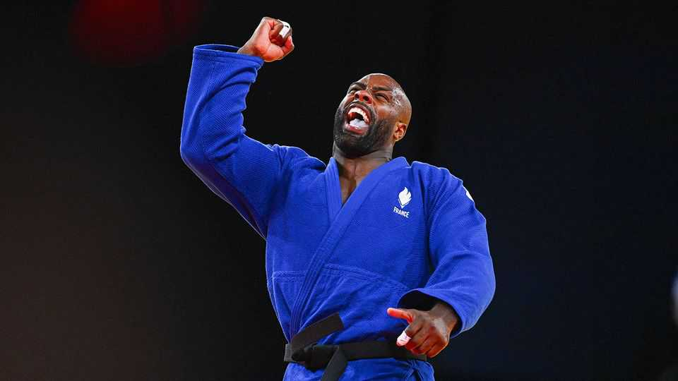

A judo champion enters the presidential race in France
His rivals are watching warily

Nov 12th 2026
“I know what it’s like to fight,” declared Teddy Riner, which by itself came as no surprise: France’s multiple Olympic gold-medallist in judo knows exactly how to throw an opponent to the ground. But when Mr Riner spoke on November 9th he was referring to high-level sport of a different sort. Seated before a sober bookshelf and French tricolore flag, he stunned France by saying that he was running for president. Within 48 hours Mr Riner’s declaration on X had been viewed 14m times—more than three times the viewership for Marine Le Pen’s presidential-style address after the recent riots.
France has since then been talking about little other than the bear of a man they affectionately call le grand Teddy. Some asked if the declaration was an AI-generated hoax (it is not). A Socialist politician called it a “farce”. Emmanuel Macron said that Mr Riner’s candidacy “can only benefit the country”, prompting some to suspect the president’s hand, if only to stir the race up ahead of next year’s presidential election.
Teddymania partly reflects the flatness at the political centre. The race has been dominated by the extremes: Ms Le Pen on the populist right, who is poll favourite to win, and Jean-Luc Mélenchon on the populist-left. Mr Riner pitched himself, in Macronesque terms, as “neither right nor left”. “France doesn’t need a professional politician who recites talking points and spends all day squabbling,” he said, “It needs common sense, firmness, justice and a government that sets things right.”
Polling analysts do not take Mr Riner’s bid too seriously. He has a small team, no party, little time, and needs 500 elected officials to endorse him. But the judoka is wildly popular among varied demographic groups. He could in particular damage Mr Mélenchon, who relies on the youth vote. A poll suggests that 22% of the French would consider voting for him. If so, he could possibly qualify for the run-off. Footballers (in Liberia) and cricketers (in Pakistan) have been elected leaders elsewhere. Mr Riner is a national treasure. And the rebellious French dislike a pre-written electoral script. If nothing else, his candidacy has injected some hope and energy into the race. France, said Mr Riner, had given him the “opportunity to dream big”.■